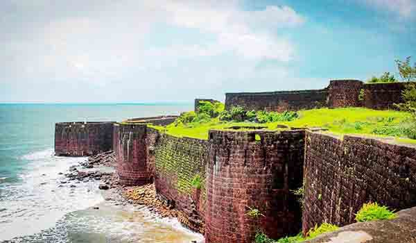

Devgad Fort is situated in the Devgad taluka in Sindhudurg district in the state of Maharshtra. It is one of the best places to visit for holidays and adventure.Devgad Fort is a tourist spot that offers people an amazing view. The fort is situated just at the confluence of Arabian Sea and Devgad Creek which gives a timeless view of the sea.The place is well known for the magical and mystical sunset that can be witnessed from the fort.
Surrounded by nature, this fort is name after the place Devgad which is famous worldwide for the production of Alphonso mangoes.The fort was destructed by the attacks from other rulers but was later reconstructed and given life by Maratha Chief Kanoji Angre. The beauty of the fort enthralls the tourists and the panoramic view of the area is impossible to ignore. The scenic beauty of the area is the reason behind the ramparts and the elegantly designed walls.
There is a Ganesha Temple inside the fort to which tourists are attracted. There are three cannons and a lighthouse present which adds to the popularity of the fort.
How to Reach: Devgad Fort is easily accessible through roads and local buses are also available. One can also take their private vehicle to visit the fort.